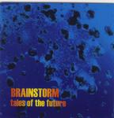

Home Artist links

| Artist: | Brainstorm |
| Title: | Tales Of The Future |
| Label: | self produced |
| Length(s): | 60 minutes |
| Year(s) of release: | 1998 |
| Month of review: | 10/2000 |
Line up
Steve Bechervaise - keyboards
Craig Carter - guitars
Vittorio Di Iorio - drums, keyboards
Paul Foley - vocals, acoustic guitar
Jeff Powerlett - bass, vocals
Tracks
| 1) | Cyborg | 8.44
|
| 2) | Evolution | 6.09
|
| 3) | Not Saying Anything | 3.28
|
| 4) | Brideshead | 8.33
|
| 5) | In Violent Hours | 4.31
|
| 6) | Spaceport | 3.59
|
| 7) | Still I See | 8.50
|
| 8) | Sow The Wind | 2.22
|
| 9) | Conception | 3.48
|
| 10) | Walks In Anonymity | 4.49
|
| 11) | Egress | 5.01
|
Summary
The third album of this Australian band.
The music
Cyborg is the opener of this album. It opens in a rather relaxed fashion with
acoustic guitar and somewhat sixties' sounding vocals. The music has a tinge
of psychedelica, but definitely not the rougher Hawkwind kind or even the
quirky Gong kind. Some keyboards here as well. Evolution continues along this
line (for some reason I'm reminded of early Van Der Graaf Generator here, and
I mean very early: Aerosol Grey Machine) and for the rest I'm reminded of
Jane and Moody Blues. This means that the music is not that extremely
progressive, but does have a number of its elements.
Not Saying Anything is sung in a bit wavering, high way. The music becomes
even more retro and maybe a bit too simple for my tastes, although I like
the (darker) part after the chorus.
Brideshead opens with a strong slow melody on guitar. The vocals opens
waveringly, but soon turn to catchy. The final instrumental part has
some great melodies based on strings and keyboards. Very cosmic and imposing.
In Violent Hours opens slow and cosmically. The music is quite menacing in
a way here, with slow ponderous music and slow vocals. Really well done.
Spaceport is a bouncy piece with Spanish guitar and again an accessible
vocal part, a bit like the Moody Blues. Still I See is the longest track
on this album. It opens with subtle cosmic keyboards and acoustic guitar
and subtle percussion. The continues to be very calm throughout the first
two verses. Some organ comes in during the less relaxed chorus and then
some darker guitar work also enters the song. This is one of the better songs
on the album with a strong build-up and a clear guitar solo ringing out
at the end. Sow The Wind is totally different, hasty with a quick rhythm
and the music has a strong tendency to a kind of serious Rawhide.
Then the pace goes down again, but it rises again soon for another verse
and chorus. Conception is a short track, very much in the sixties vein, catchy
and quite pacey (think Aerosol Grey Machine again). Walks In Anonimity
is a slow somewhat sad sounding piece with subtle playing on guitar and
melodious keyboards in various places. A very melodious track with also
relatively a lot of a variation in that department. Even during the more
menacing instrumental parts in between the vocal parts, the band does not
really shake off their peaceful easy-going nature. Too bad.
Egress is the final track on this album with a (softly) driving riff and
somewhat Arabic sounding melodies on the keyboard. A cosmic guitar/keyboard
solo rounds it off.
Lyrics are dominated by a tendency for science fiction.
Conclusion
Relaxed, subtle, sixties dominated is the music of Brainstorm. The music
hardly becomes heavy or active and this might be a problem for most people,
because although the song seem well-written there's not much enthusiasm
coming over to the listener. Especially the vocals are rooted in the sixties
and I am often thinking of other easy-going bands such as the Moody Blues. In
other places I think of Jane, but overall the music is an easy-going sort
of psychedelic music with space rock influences. I like the songs here,
although I hope for a little more fire both in composition as well as in the
playing next time. The vocal parts are well-sung but at the moment sound a bit
too dated. Best tracks for me are In Violent Hours, Still I See and Egress.
© Jurriaan Hage